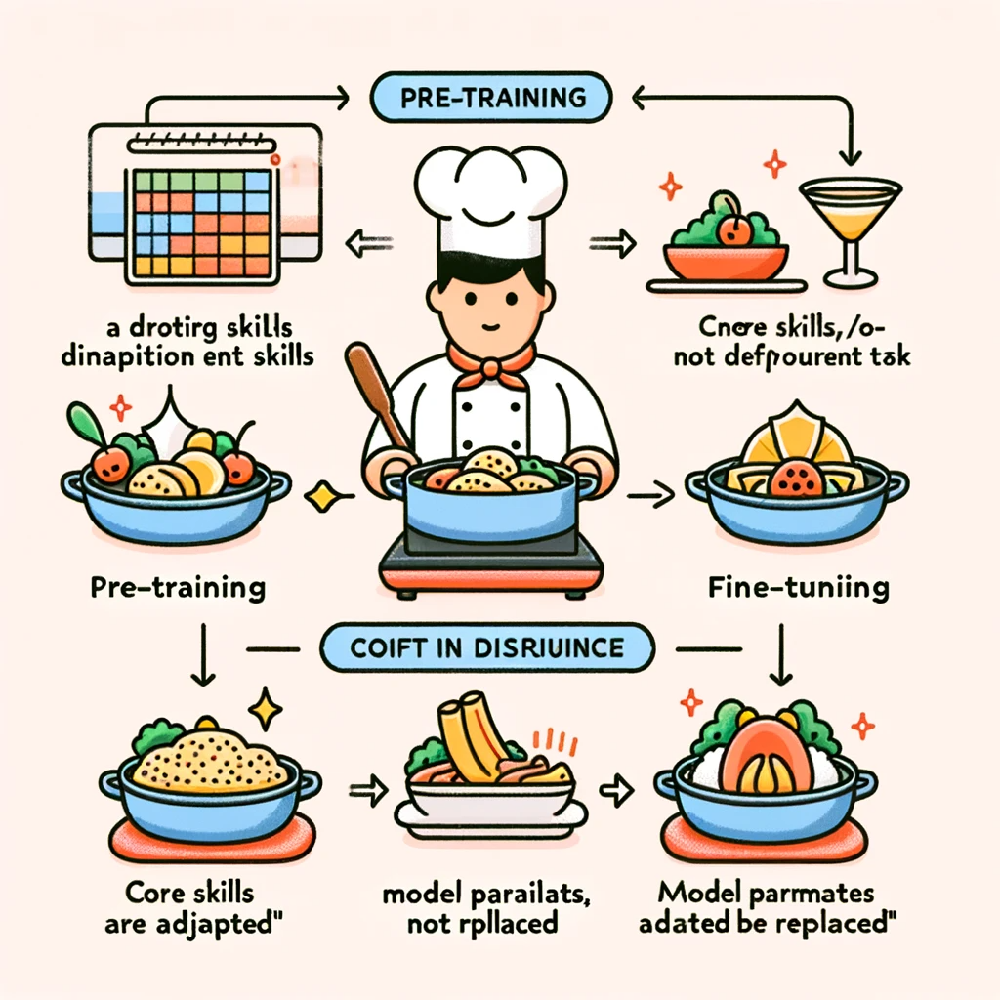
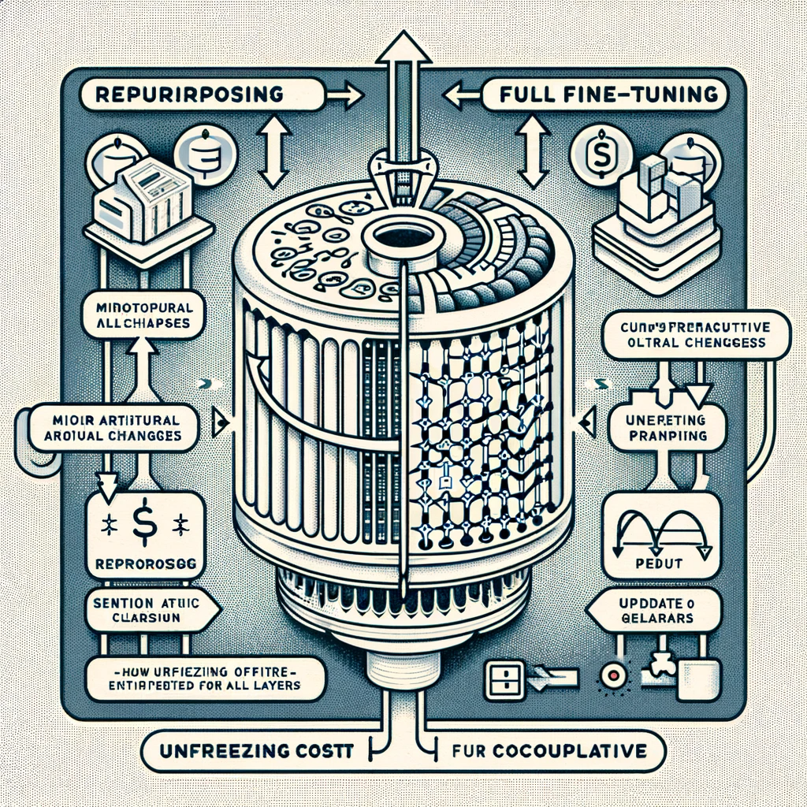

LLM Fine-tuning#
In the realm of machine learning, the concept of fine-tuning is akin to the art of adaptation and specialization. Just as a master craftsperson tailors their skills to the nuances of a new material, a machine learning model undergoes fine-tuning to adapt to the specific patterns and intricacies of a new dataset. This fine-tuning process is especially crucial when the new dataset—while related—is substantially different from the data the model was originally trained on, known as out-of-distribution data.
To illustrate this, imagine a highly efficient spam detection system trained extensively on email data. It has become adept at recognizing the common patterns and signals of spam in emails. Now, suppose we want to deploy this system on social media platforms to detect spam messages in posts or comments. The nature of text and spam signals in social media can be vastly different from those in emails due to the use of slang, shorter texts, different formatting, and a variety of multimedia content. Direct application of the email-trained model to social media is likely to result in a high error rate due to the distributional shift.
Instead of retraining a new model from the ground up with social media data, which is resource-intensive and time-consuming, fine-tuning the existing model on a curated dataset from social media can be much more efficient. The model’s prior knowledge gleaned from emails serves as a foundational layer of understanding text content, which can then be refined and adjusted to capture the nuances of social media spam.
Fine-tuning is critical for adapting models to new datasets where the distribution differs from the original training data.
It involves updating model parameters to better fit the new data, much like a craftsperson adapts their skills to a new material.
Efficiency is gained by building on the existing knowledge base of the model, rather than starting anew.
This approach is akin to teaching a spam detection system, originally trained on emails, to understand and detect spam on social media platforms.
What is fine-tuning?#
{kind=link}
Imagine a scenario where a machine learning model is like a seasoned chef, trained at a culinary school in Paris, who specializes in classic French cuisine. This chef has spent years perfecting the art of delicate sauces, pastry, and confections, developing an instinctive feel for French ingredients and techniques. Their skill set is highly specialized, and they excel within the familiar environment of a French kitchen.
Now, consider that this chef is suddenly tasked with preparing authentic Thai cuisine. The foundational culinary skills are there, but the ingredients, flavor profiles, and cooking techniques of Thai food are quite distinct from French cuisine. If the chef tries to prepare Thai dishes with only their French culinary training, the results might be subpar. The chef’s palate is fine-tuned to butter and herbs, not lemongrass and fish sauce.
Fine-tuning in this context would involve the chef learning to adapt their existing skills to the new cuisine. They wouldn’t need to start from scratch—many of their kitchen skills are transferable—but they would need to learn the nuances that make Thai food unique. By training under a Thai master chef or practicing with a smaller, focused set of recipes, the chef can begin to recalibrate their culinary intuition to embrace the flavors and techniques of Thai cooking.
Applying this back to machine learning, fine-tuning a pre-trained model—like our French chef—on a new dataset is analogous to teaching the chef to master Thai cuisine. The model’s basic structure and learned parameters serve as a strong starting point, and with additional training on a smaller, specialized dataset, it can adapt to perform well on a different task, like detecting trucks on highways rather than passenger cars in urban settings.
Pre-training is like a chef learning to cook French cuisine—developing a broad base of skills.
Moving to Thai cuisine represents a shift in data distribution—a new task with new patterns.
Fine-tuning is the chef adapting their skills to Thai cooking, just as a model is updated for a new dataset.
The core skills (or model parameters) are adapted, not replaced, making the process efficient.
The result is a model—or chef—that can perform the new task effectively with less additional training than starting from scratch.
Different LLM Fine-Tuning Techniques#
{kind=link}
When it comes to fine-tuning Large Language Models (LLMs), the approach must be tailored to the specific end-use. Fine-tuning is not a one-size-fits-all solution; it ranges from minor architectural adjustments to significant retraining of the model.
For instance, if we possess a pre-trained LLM designed for text generation, but we wish to pivot its functionality to sentiment or topic classification, a repurposing of the model is required. This involves a slight modification to the model’s architecture, particularly the way its embeddings are utilized. Embeddings—numerical vectors representing input features—are key to this process. Some LLMs, such as those in the GPT family, use these embeddings to generate subsequent tokens in text generation tasks. In repurposing for classification, these embeddings are instead routed to a classification model—usually a series of fully connected layers that translate the embedding vectors into class probabilities.
During this repurposing phase, the attention layers of the LLM, which are responsible for understanding the context within the text, are often frozen. This means they are not updated during the fine-tuning process, resulting in significant savings in computational cost. However, the classifier built on top of the embeddings must be trained using a supervised dataset, which comprises text examples and their corresponding classes. The size and quality of this dataset are crucial and must be commensurate with the complexity of the classification task and the capabilities of the classifier.
Alternatively, there are scenarios where a more thorough fine-tuning is necessary, involving the updating of the transformer model’s parameters. This full fine-tuning requires the attention layers to be unfrozen, allowing for comprehensive retraining. Such a process is inherently more resource-intensive and complex, especially as the size of the model scales up. To mitigate this, practitioners can opt to keep certain parts of the model frozen or employ advanced techniques to reduce the computational overhead.
Repurposing involves minor architectural changes, particularly for tasks like sentiment or topic classification.
Embeddings are re-routed to a new classifier model, while the transformer’s attention layers are typically frozen.
Computational efficiency is gained by not updating the entire model, just the classifier using a supervised dataset.
Full fine-tuning may be necessary for more complex tasks, requiring unfreezing and updating the entire model’s parameters, which is more computationally expensive.
Self-Supervised Learning vs Supervised Fine-Tuning#
When updating an LLM’s knowledge base to encompass new domains, such as medical literature or new languages, the use of unstructured datasets is a common approach. Unstructured datasets—often comprising articles and scientific papers—allow the model to assimilate a wealth of domain-specific information through self-supervised learning. This form of training utilizes the raw text to adjust the model’s parameters without explicit labeling, effectively learning from context and content.
Self-supervised learning stands out for its scalability. Since it does not rely on labeled data, it can leverage vast amounts of information, mirroring the initial training phase of many foundation models. For organizations with extensive in-house databases, this approach can be particularly effective, as they can draw upon existing knowledge bases for model training.
However, there are instances where merely updating the model’s knowledge is insufficient. When the objective is to alter the behavior of the LLM, such as ensuring it follows instructions or maintains context over long conversations, Supervised Fine-Tuning (SFT) becomes essential. SFT involves training the model on a dataset of prompts and corresponding responses, requiring manual curation or generation via other models. This method is crucial for models like ChatGPT, designed to adhere to user instructions and engage in extended dialogues.
Instruction fine-tuning is a more specialized form of SFT where the model is trained to understand and execute specific commands or tasks. It’s a targeted approach that aligns the model’s outputs with expected behaviors and outcomes, particularly useful for interactive applications where user engagement is key.
Self-supervised learning updates an LLM’s knowledge using unstructured datasets, ideal for domain adaptation.
It leverages contextual learning from large volumes of text, making it highly scalable.
Supervised Fine-Tuning (SFT) is necessary to modify an LLM’s behavior, using prompt-response pairs.
Instruction fine-tuning is a specialized SFT that trains LLMs to follow complex instructions, critical for models like ChatGPT.
Reinforcement Learning from Human Feedback (RLHF)#

Reinforcement Learning from Human Feedback (RLHF) represents the cutting edge in the fine-tuning of LLMs, where human judgment plays a critical role in model refinement. This approach transcends traditional fine-tuning methods by incorporating human preferences into the learning loop, enabling the model to produce outputs that align more closely with user expectations and values.
The process of RLHF is intricate, involving several stages and the collaboration of human reviewers. Initially, an LLM such as GPT is fine-tuned using Supervised Fine-Tuning (SFT) on carefully crafted prompts and responses to guide the model towards the desired output. Upon this foundation, RLHF introduces human reviewers who evaluate the model’s responses to a variety of prompts, grading them according to relevance, coherence, and appropriateness.
These human evaluations are then used to construct a reward model—an auxiliary model that aims to predict human preferences based on the ratings given to the LLM’s outputs. The language model enters a deep reinforcement learning (RL) loop, where it generates responses, the reward model assesses them, and the language model adapts its parameters to maximize the ‘reward’ or positive feedback it receives from the reward model.
One of the most prominent applications of RLHF is in the development of ChatGPT by OpenAI, where it underwent fine-tuning in alignment with the principles outlined in the InstructGPT paper. Through this process, ChatGPT was tailored to generate responses that not only maintain coherence but also adhere to the instructions and intent of the user, embodying a significant leap towards AI that can interact more naturally and effectively with human users.
RLHF involves human reviewers to fine-tune LLMs beyond standard SFT, aligning outputs with human preferences.
Begins with SFT on crafted prompts and responses to direct initial model behavior.
Utilizes human reviewers to rate model outputs, integrating human judgment into the training process.
Develops a reward model to emulate human ratings and guide the LLM towards producing higher-rated responses.
Engages in a reinforcement learning loop where the LLM is iteratively adjusted to maximize the reward, exemplified by the development of ChatGPT.
Other Approaches to Enhancing LLM Performance#
When fine-tuning is not viable or advantageous for a Large Language Model (LLM), alternative strategies like in-context learning and retrieval augmentation come into play. These methods provide flexibility and can significantly improve the model’s performance, particularly in dynamic or data-constrained environments.
In-context learning leverages the LLM’s ability to utilize the context provided during inference to generate appropriate responses. This is especially useful when models are accessed through APIs with limited fine-tuning capabilities, or when there is insufficient data to fine-tune effectively. Additionally, in highly dynamic domains such as news, where data changes daily, frequent retraining is impractical. In-context learning can adapt to new information with each query, bypassing the need for constant fine-tuning.
Retrieval augmentation, on the other hand, involves enriching the prompt with relevant information retrieved in real-time. This approach can be particularly beneficial in applications where the context is continuously evolving or highly personalized, such as in the creation of a chatbot that tailors its interactions to individual users. A practical implementation of this approach could involve the creation of a vector database that stores embeddings of company documents. When a user query is received, the database retrieves the most relevant documents, and their content is used to condition the LLM’s response, ensuring that the model’s output is informed and specific to the user’s needs.
In-context learning allows LLMs to generate relevant responses based on the context provided during inference, useful when fine-tuning is not an option.
Retrieval augmentation enhances prompts with real-time information from relevant documents, ideal for dynamic and context-sensitive applications.
A vector database of document embeddings can be used to retrieve and provide contextual information to the model, streamlining the retrieval augmentation process.
These approaches enable LLMs to remain effective in environments where data is scarce, frequently changing, or highly personalized.
Conclusion#
The landscape of Large Language Models (LLMs) is diverse and rapidly evolving, necessitating a variety of fine-tuning approaches to meet specific application demands. While traditional fine-tuning and Supervised Fine-Tuning (SFT) remain foundational for adapting pre-trained models to new domains and tasks, advanced techniques like Reinforcement Learning from Human Feedback (RLHF) push the boundaries by integrating human preferences into the training loop. However, when these methods are constrained by data availability, API limitations, or the dynamic nature of the application, alternative strategies such as in-context learning and retrieval augmentation prove invaluable.
These methods enable a more agile and immediate adaptation of LLMs to new content and user-specific contexts, circumventing the need for extensive retraining. By leveraging the strengths of each approach, we can harness the full potential of LLMs across a broad spectrum of use cases, making AI more responsive and tailored to human needs.
Fine-tuning and SFT are essential for tailoring LLMs to specific tasks, with RLHF providing a pathway to integrate human evaluative feedback.
In-context learning and retrieval augmentation emerge as practical solutions when conventional fine-tuning is not feasible.
These strategies ensure that LLMs maintain their utility and performance in data-constrained or highly dynamic application scenarios.
The choice of fine-tuning method depends on the balance between the desired model behavior, resource availability, and application requirements.